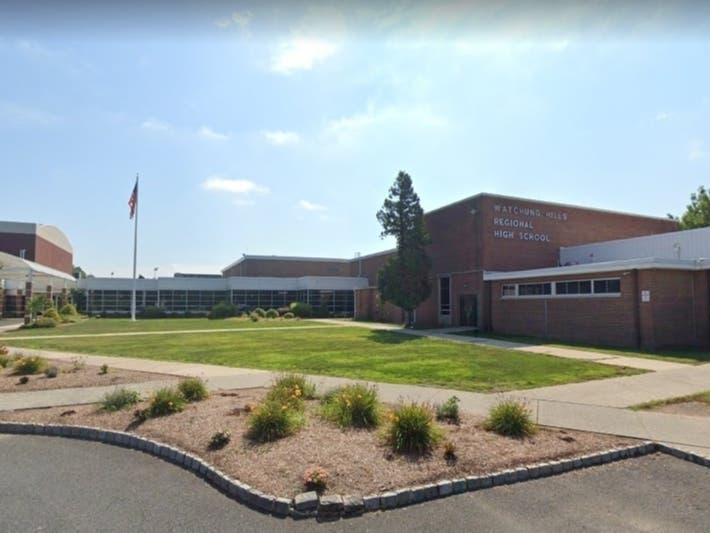

University of Michigan
Degree Intended: BS Informstion Science (Data Analysis Path) & Ross School of Business Minor
First Year GPA: 3.92
School Involvement: Project Leader for DEI and Sustainability Comissions of Central Student Government, Treasure of Chi Omega Sorority

Watchung Hills Regional High School
Rank: Top 5%
SAT Math: 790
AP Scholar With Distinction: Computer Science Principles(5), Computer Science A (5), Macroeconomics (5), Microeconomics(5), Calculus AB (5), Psychology (4)
School Involvement: Co-Captain Varisty Tennis Team, Vice President Future Business Leaders of America, Board Member of Student Government